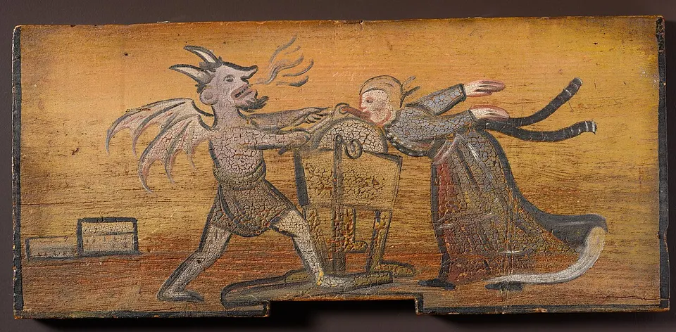
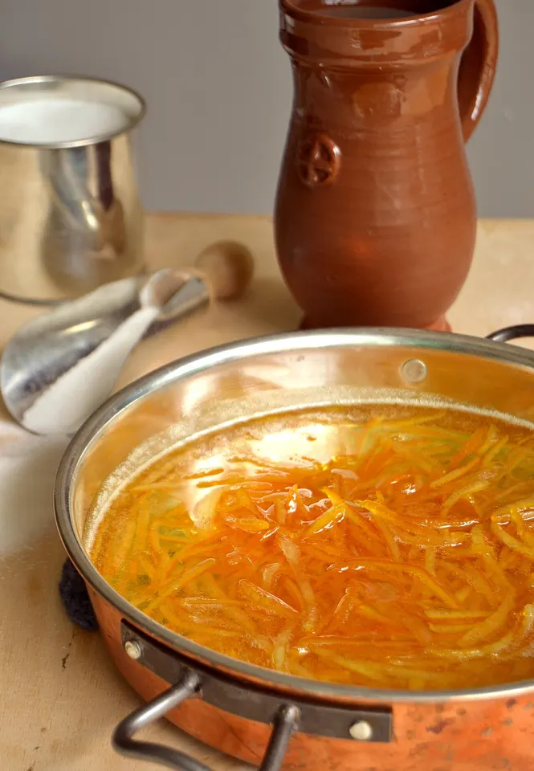
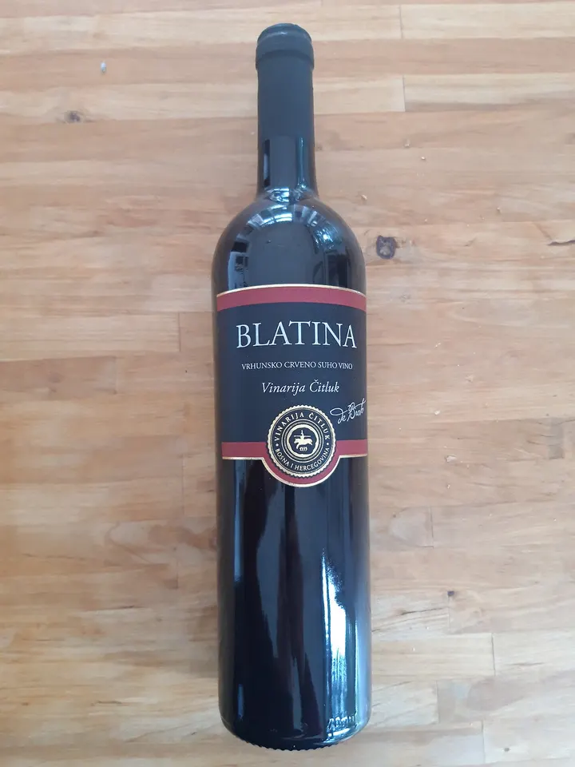

류블랴나 블레드
일반- 수단
- 버스 · Arriva·Nomago 직행 버스
- 소요
- 약 1시간 20분
- 환승
- 직행
약 1시간 간격. 기차역(레스체-블레드)은 호수에서 4km 떨어져 있습니다.
발칸 · 아드리아해
Slovenia – Croatia – Bosnia (Balkan package route)
국내 여행사 발칸 상품에서 가장 많이 보이는 7~9박 동선을 자유여행으로 옮겼습니다.
.jpg?width=960)


국내 발칸 패키지 다수가 블레드·류블랴나에서 시작해 플리트비체, 스플리트를 거쳐 모스타르를 들르고 두브로브니크에서 끝나는 7박 9일 안팎 구성입니다. 같은 순서를 대중교통으로 이어 류블랴나로 들어가 두브로브니크에서 나옵니다.


지도: © OpenStreetMap 기여자
현지 10박 11일 · 류블랴나 2박 → 블레드 2박 → 자그레브 1박 → 플리트비체 1박 → 스플리트 1박 → 모스타르 1박 → 두브로브니크 2박
도착 인천 → 류블랴나 공항. 도착일은 숙소 주변 위주로 가볍게.
프레셰렌 광장 → 삼중교 → 플레치니크 시장 → 용의 다리 → 류블랴나 성(푸니쿨라) → 류블랴니차 강변 카페.
금요일(봄~가을)에는 "오픈 키친" 음식 장터가 열립니다.
숙박: 류블랴나
버스 약 1시간 → 포스토이나 동굴 열차 투어 → 절벽에 박힌 프레드야마 성(여름 셔틀).
동굴 안은 일 년 내내 10℃ 안팎입니다.
숙박: 류블랴나
이동 류블랴나 → 블레드 · 버스 약 1시간 20분 일반
호수 둘레길(약 6km, 1시간 30분) → 플레트나 배로 블레드섬 → 절벽 위 블레드 성 → 크렘슈니타(크림 케이크).
오이스트리차·말라 오소이니차 전망대는 일출·일몰 사진 명소입니다.
숙박: 블레드
빈트가르 협곡(4~10월, 예약제) → 버스 약 40분 보힌 호수 → 사비차 폭포 또는 보겔 케이블카.
숙박: 블레드
이동 블레드 → 자그레브 · 버스 약 3시간 45분 일반
반 옐라치치 광장 → 돌라츠 시장 → 자그레브 대성당 → 성 마르코 성당 → 로트르슈차크 탑 → 실연 박물관.
12월 "어드벤트 자그레브"는 유럽 최고 크리스마스 마켓으로 여러 번 뽑혔습니다.
숙박: 자그레브
이동 자그레브 → 플리트비체 · 버스 약 2시간 15분 일반
상부·하부 호수 트레킹 코스(4~6시간), 벨리키 슬라프 폭포, 전기 보트·파노라마 열차 포함.
여름에는 입장 시간 지정 예약이 필요합니다. 근처에서 1박하면 아침 일찍 한산할 때 들어갈 수 있습니다.
숙박: 플리트비체
이동 플리트비체 → 스플리트 · 버스 약 4시간 일반
디오클레티아누스 궁전(페리스틸·지하 궁전·성 도미니우스 종탑) → 리바 해안 산책로 → 마리안 언덕 일몰.
숙박: 스플리트
이동 스플리트 → 모스타르 · 버스 약 4시간 일반
쿠윤질루크 장터 → 스타리 모스트 다이빙 구경 → 코스키 메흐메드 파샤 모스크 첨탑 전망 → 비셰비차 저택.
당일 관광객이 떠난 저녁에 다리 조명이 가장 예쁩니다.
숙박: 모스타르
이동 모스타르 → 두브로브니크 · 버스 약 3시간 30분 확인
필레 문 → 스트라둔 대로 → 성벽 한 바퀴(약 2km) → 스르지산 케이블카 일몰.
성벽은 개장 직후나 늦은 오후가 덜 덥고 덜 붐빕니다.
숙박: 두브로브니크
로브리예나츠 요새 → 로크룸섬(배 15분) 수영·산책 → 반예 해변 → 구항구 저녁.
숙박: 두브로브니크
오전에 못 본 곳을 둘러보고 공항으로 이동합니다. 귀국편은 대부분 다음 날 한국에 도착합니다.
약 1시간 간격. 기차역(레스체-블레드)은 호수에서 4km 떨어져 있습니다.
여름에는 블레드–자그레브 직행 버스가 있는 날도 있습니다.
공원 입구 1·2번 중 숙소와 가까운 곳에서 내리세요.
3시간 30분~4시간 30분. 겨울에는 하루 1~2편으로 줄어듭니다.
약 4시간. 여름에는 하루 전 예매 권장.
하루 2~3회, 3시간 20분~3시간 40분. 여권 필요.
국경 슬로베니아·크로아티아(솅겐) → 보스니아(비솅겐) → 크로아티아 국경 심사가 있습니다.
이스탄불·프랑크푸르트·뮌헨 등에서 1회 경유. 편수가 적어 자그레브·비엔나·베네치아 공항 + 육로 이동과 비교해 보세요.
이스탄불·프랑크푸르트·뮌헨·비엔나 등에서 1회 경유. 겨울에는 편수가 크게 줄어 2회 경유가 될 수 있습니다.
5·9·10월
11~3월(해안·국립공원 감편)
패키지가 가장 많이 출발하는 시기는 여름이지만, 덥고 붐비지 않은 5월과 9~10월을 추천합니다.
지나가는 나라마다 머무는 기간에 맞춰 골랐고, 비슷한 상품(와인끼리, 꿀끼리 등)은 하나만 넣어 10개 이내로 추렸습니다. 기간 탭을 바꾸면 도시에 맞게 다시 고릅니다.



카드를 누르면 나라별 쇼핑·기념품 페이지에서 구매처·반입 유의사항·사진 출처를 볼 수 있습니다. 사진은 Wikimedia Commons 자유 라이선스 사진입니다.
.jpg?width=960)

.jpg?width=960)
단기·중기(4~5박) · 1개국 · 추천 6·9월
작은 수도와 알프스 호수 두 곳. 이동 시간이 가장 짧은 힐링 코스.

.jpg?width=960)
장기(8~9박) · 2개국 · 추천 5·9월
베네치아에서 출발해 합스부르크 항구와 슬로베니아 해안을 지나 알프스 호수에서 끝나는 코스.


중기·장기(7~8박) · 2개국 · 추천 5·9·10월
송로버섯 언덕 마을과 베네치아풍 어촌을 차로 잇는 크로아티아·슬로베니아 반도 일주.


중기·장기(7~8박) · 1개국 · 추천 5·6·9월
수도에서 호수 국립공원을 지나 달마티아 해안을 따라 내려가는 크로아티아의 정석.
정보 확인일 2026-11-21